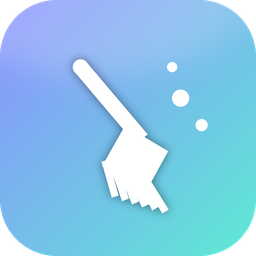
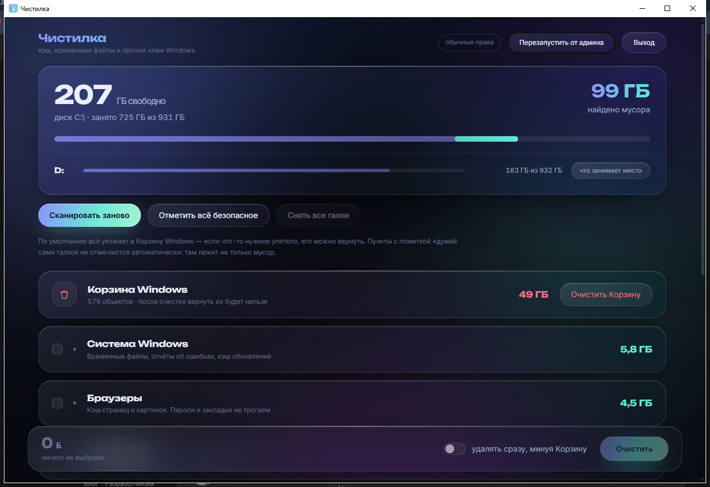

Чистилка
Кэш, временные файлы и прочий хлам Windows
- Скачай архив и распакуй его: правой кнопкой → «Извлечь все».
- Открой папку
Чистилкаи дважды кликниЗапустить Чистилку.bat. - Если Windows спросит, запускать ли файл из интернета, — нажми «Запустить».

По умолчанию всё удаляется в Корзину, так что промах можно откатить. Личные папки программа не трогает. Python внутри архива свой, на компьютер ничего не ставится.